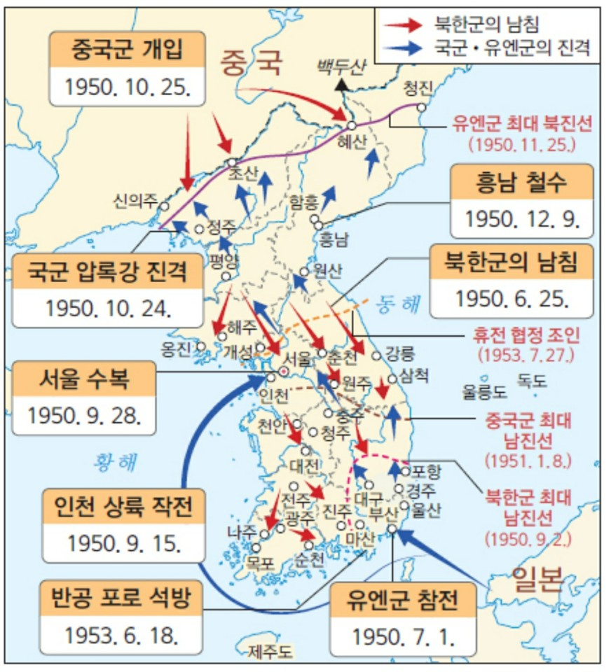

1945년 대한민국은 2차세계대전에 패배한 일본이 패망하여 항복하는 동시에 8월 15일 광복을하게 됩니다.
일본의 항복으로 2차세계대전에 최종적으로 승리한 연합군중 미군은 한가지 고민거리가 생깁니다. 그것은 바로
소련군이 만주에 있는 잔존 일본군을 물밀듯이 남하를 하여 이대로 가면 순식간에 한반도를 소련이 단독 점령할 것을
우려했기 때문입니다.
왜 자국 본토의 땅도 아니고 그저 작은 하나의 나라가 점령당하는 것이 왜 미국은 큰 골칫거리
였을까요? 그것은 바로 공산주의 세력과 민주주의 세력간의 세력갈등 때문이였습니다. 만일 한반도가 소련에 의해 공산화 된다면
이후 차례 차례로 모든 아시아권 국가가 도미노 처럼 공산화 될거라고 미국은 판단했던것 이었습니다. 이에 미국은 서둘러 한반도에
군대를 주둔시키려 했으나 소련군이 예상치 못한 속도로 빠르게 남하를 하게됩니다. 다급해진 미국은 북위 38도에 선을 긋고 이 이상은
넘어오지 말라고 소련에게 통보를 하게 되는데 이것이 바로 38선입니다.
결국 일본에게 해방이 되었던 대한민국은 해방되자 마자 남과 북으로
갈라지게 되었고 북쪽은 공산주의세력 남한은 민주주의 세력이 집권하게 됩니다. 극심한 이념차이로 남과 북의 사이는 갈수록 나빠지게 되었고
결국 1950년 6월 25일 북한의 김일성은 남한을 공산화 시킨다는 야망으로 소련의 지원을 받아 남한을 기습 남침하게 됩니다. 이것이 바로 우리가
알고있는 6.25 한국전쟁의 발단입니다.

전쟁 초기 북한은 소련의 물자 지원을 받아 수많은 무기와 전차등을 보유하여 압도적인 화력으로 우리 국군을 몰아붙였습니다. 그에 비해 우리 국군은
마땅한 무기도 없었으며 심지어 전쟁 발발 직전 대다수의 전방 병력 3분의 1이 휴가를 나가 잔존병력이 매우 적어 최전선에서 밀려오는 북한군을 막기에는 역부족 이였습니다.
북한에 비해 매우 부족한 물자와 병력 이 두가지 요소만으로도 북한은 매우 유리한 상황이였죠 최전선에서 국군은 북한군의 불법 남하를 저지하려 필사적으로 막았으나
소련제 t-34 탱크로 무장한 북한군 상대로는 마땅한 대전차 무기도 없는 국군에겐 계란으로 바위치기나 다름 없었습니다. 전쟁 발발 이틀만에 서울이 함락될 위기에 빠지자
국군은 미아리 방어선을 구축하여 북한군을 저지하려 했으나 결국 북한군의 t-34전차에 방어선은 함락당하고 6월 28일 전쟁 발발 3일만에 서울은 함락되고 맙니다.
서울이 함락되기전
위기감을 느낀 이승만 정부는 다급히 서울을 탈출하였고 서울 함락 당일 북한군의 남하를 최대한 늦추기 위해 국군은 한강 대교를 폭파시키게 됩니다. 이때 모든 상황을 지켜보던 미국은
사태가 상당히 심각해 졌음을 인지하게 됩니다. UN의 결의로 탄생한 대한민국이 공산주의 세력에게 공격을 받았고 대한민국이 공산화 된다면 다음 타켓은 일본이 될것이며 이렇게 차례차례
주변 국가들이 공산화가 진행된다면 미국은 신뢰를 잃어 힘을 잃게되고 세력을 확장한 공산국가 세력인 소련이 거대해질 것이 분명했기 때문입니다. 결국 UN은 북한을 침략자로 규정하고
38선 이북으로 군대의 철수를 요구하였으나 북한은 이를 거절하였고 결국 더글라스 맥아더 장군을 총사령관으로 UN군을 결성해 6.25전쟁에 참전하게 됩니다.
하지만 UN군의 참전에도 불구하고
우리 군은 낙동강 전선에서 고전을 금치 못하였는데 9월 15일 맥아더 장군이 이끄는 UN군의 인천상륙작전이 성공으로 끝나고 전세가 뒤바뀐 틈을 타 국군과 UN군은 낙동강 전선을 돌파해
9월 28일 서울을 수복하게 됩니다. 전쟁은 여기서 끝나지 않았으며 국군과 UN군은 북한 정권을 몰아내고자 10월 1일 국군 3사단이 최초로 38선을 넘게되었고 10월 19일 국군 1사단이 평양을
점령합니다. 결국 우리 국군은 압록강 까지 도달하였고 UN군과 우리 국군은 북한정권을 완전히 몰아낼 최후의 공격을 감행하기로 결심합니다.
(압록강에 도달한 국군 장병이 수통에 압록강 강물을 담고있는 사진)
전쟁은 종전협정으로 멈췄지만 대한민국은 전쟁보다 더 큰 위기를 맞이합니다. 전쟁으로 인해서 대한민국은 엄청난 물적, 인적 자원을 손실했고 도로, 철도, 학교 등과 같은 각종 산업시설 마저 모두 파괴되어 더이상의 경재
활동이 불가능할 정도로 황폐화 되었습니다. 군 전사자, 실종자만 하더라도 20만명이 넘고 민간인 사망자 및 전쟁고아, 이산가족 등의 민간인 피해도 만만치 않았습니다. 더 이상의 나라구실을 할 수 없게된 대한민국은 미국의
경재적 지원을 받았고 추후 북한이 다시금 재침략 할것을 우려하여 1953년 10월 1일'한미 상호 방위조약이' 체결되고 1954년 11월 17일에 정식 발효됩니다. 이 '한미 상호 방위조약'으로 인해서 한국이 북한 또는 다른 외부로 부터
공격을 받을시 군사적으로 지원을 받을 수 있게되었습니다.
우리 국군 또한 가만히 있지는 않았습니다. 미국의 군사적 물자 지원을 토대로 전쟁 이후 병력을 10만명에서 70만명으로 증가 시키고 군단과 사단을 증편 시켰으며 매 해마다 군 간부들이 미국의 군사 교리를 배움으로서 선진 군 전술과
행정기술을 배워 군사력 증강에 큰 힘을 실었습니다.
그러나 북한은 전쟁 이후에도 지속적인 무력도발을 실시해 왔고 남파공작원을 차출하여 대한민국 대통령을 암살하려고 하는 등 여러 만행을 저지릅니다. 현재 까지도 북한은 지속적인 미사일 무력시위로 남북 관계에 긴장을 불어넣고 있으며 지금도
국가 안보에 위협이 가는 행위를 벌이고 있습니다.
한때 2013년 6월 전국 고교생을 대상으로 청소년들이 역사에 대해 얼마나 잘 인지하고 있는지 설문조사를 한 적이 있습니다. 여기서 한국전쟁은 북침인가, 남침인가에 대부분의 학생들이 6.25 한국전쟁은 북침이다 라고 답하여 대한민국 청소년들의
역사인식의 실태 라며 한창 떠들석 했던적이 있었습니다. 하지만 이는 용어의 뜻을 헷갈려해 발생한 일로 모두가 "북한이 한국을 침략한 전쟁이다" 라는것은 알고 있으나 북침의 뜻을 "북한이 침략을 시도했다."라는 뜻으로 잘못 이해하여 발생한 일로
밝혀졌습니다.
상당수의 많은 사람들이 이를 헷갈려 하는데 국립국어원 표준국어대사전에 따르면 우리가 흔히 알고있는
'북침(北侵)'은 "「명사」 남쪽에서 북쪽으로 침략함."이란 뜻으로 규정하고 있습니다. 즉 '남침(南侵)'이 "「명사」 북쪽에서 남쪽을 침범함."이란 뜻으로 우리는 단어를 혼동하지 않도록 숙지하면
좋을것 같습니다.
자료출처 : 연합뉴스 https://www.yna.co.kr/view/GYH20200619002300044 [그래픽] 6.25 당시와 현재 남북 군사력 비교
참고자료
대한민국역사박물관 https://www.much.go.kr/L/AQkhKt2MH3.do
kbs 다큐 세계 100대 다큐멘터리 선정에 빛나는 한국전쟁 10부작! 분단부터 정전 이후까지 쫙 짚어드립니다. 한국 현대사 완벽 정리
https://www.youtube.com/watch?v=jbGcrdC77Q0&list=PLk1KtKgGi_E6mq7yPEoe6HyELu9Zn2S5N